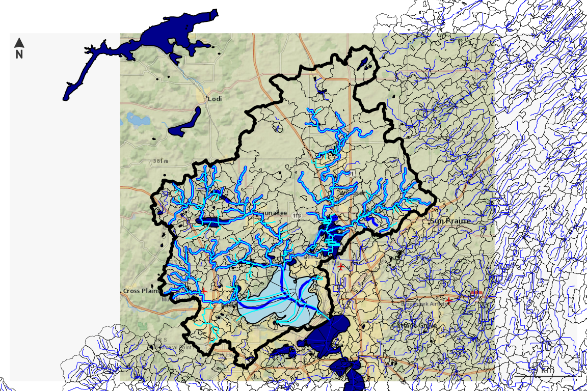

TL;DR;
Most functions in nhdplusTools work with NHDPlus High Res (HR) the same as they do with medium res. The demo below shows how to get a single four-digit hydrologic unit worth of HR data, index a point to it, subset it, and plot the results.
Note: For consistency, identifiers from NHDPlusV2 are used with HiRes data. A future release of nhdplusTools may alter this behavior.
library(nhdplusTools)
library(sf)
work_dir <- file.path(nhdplusTools_data_dir(), "hr_v_cache")
source(system.file("extdata/sample_data.R", package = "nhdplusTools"))
hr_gpkg <- file.path(work_dir, "hr_data.gpkg")
# Make a plot and get some background NHDPlusV2 data.
plot_data <- plot_nhdplus(list("nwissite", "USGS-05428500"), streamorder = 3,
nhdplus_data = sample_data,
stoponlargerequest = FALSE)
#> Zoom: 10
#> Map tiles by Carto, under CC BY 3.0. Data by OpenStreetMap, under ODbL.
#> Audotdetect projection: assuming Google Mercator (epsg 3857)
# Find the HU04 we are interested in.
hu04 <- unique(substr(plot_data$flowline$reachcode, 1, 4))
# Download some NHDPlusHR Data
hr_data_dir <- download_nhdplushr(work_dir, hu04)
# Projection and simplification for demo purposes.
hr <- get_nhdplushr(work_dir, out_gpkg = hr_gpkg,
proj = 3857)
(start_index <- get_flowline_index(st_transform(hr$NHDFlowline, 5070),
st_transform(plot_data$outlets, 5070),
search_radius = 200)) # meters albers eq area
#> Warning in check_search_radius(search_radius, points): search_radius units not
#> set, trying units of points.
#> id COMID REACHCODE REACH_meas offset
#> 1 1 22001000032700 07090002006114 37.6572 87.71874
ids <- get_UT(hr$NHDFlowline, start_index$COMID)
hr_subset <- subset_nhdplus(ids, nhdplus_data = hr_gpkg)
#> All intersections performed in latitude/longitude.
#> Reading NHDFlowline
#> 366 comids of 366
#> Writing NHDFlowline
#> Reading NHDPlusCatchment
#> 366 comids of 366
#> Found invalid geometry, attempting to fix.
#> Writing NHDPlusCatchmentNow that we have both a four digit hydrologic unit worth of NHDPlusHR data and a subset upstream of a point of interest, we can plot things up and see what it looks like. This plot uses NHDPlusV2 as returned by plot_nhdplus() as a base layer and adds NHDPlusHR data on top of it.
plot_nhdplus(list("nwissite", "USGS-05428500"), streamorder = 2,
nhdplus_data = sample_data, overwrite = TRUE,
plot_config = list(flowline = list(lwd = 2.5),
basin = list(lwd = 3)),
stoponlargerequest = FALSE)
#> Zoom: 10
#> Map tiles by Carto, under CC BY 3.0. Data by OpenStreetMap, under ODbL.
#> Audotdetect projection: assuming Google Mercator (epsg 3857)
plot(st_geometry(hr$NHDPlusCatchment), lwd = 0.25, add = TRUE)
plot(st_geometry(hr$NHDFlowline), col = "blue", lwd = 0.5, add = TRUE)
plot(st_geometry(st_transform(hr_subset$NHDFlowline, 3857)),
col = "cyan", lwd = 1, add = TRUE)
Download
NHDPlusHR support in nhdplusTools begins with the function download_nhdplushr(). The NHDPlusHR can be downloaded in four digit hydrologic unit code subsets here. download_nhdplushr() facilitates downloading these subsets for as few or as many as you need. It takes a directory you want to save your output into and a vector of four digit (HU04) or two digit (HU02) hydrologic units. There is also an option to just return the URLs of the data that would be downloaded for you to use in some other process. Since the TL;DR; above already downloaded some data. The code below shows how to just get the URLs for a whole HU02 and what the output looks like on disk.
Note: Data for each HU02 are put in their own output folder.
(hr_urls <- download_nhdplushr(work_dir, "06", download_files = FALSE))
#> [1] "https://prd-tnm.s3.amazonaws.com/StagedProducts/Hydrography/NHDPlusHR/Beta/GDB/NHDPLUS_H_0601_HU4_GDB.zip"
#> [2] "https://prd-tnm.s3.amazonaws.com/StagedProducts/Hydrography/NHDPlusHR/Beta/GDB/NHDPLUS_H_0602_HU4_GDB.zip"
#> [3] "https://prd-tnm.s3.amazonaws.com/StagedProducts/Hydrography/NHDPlusHR/Beta/GDB/NHDPLUS_H_0603_HU4_GDB.zip"
#> [4] "https://prd-tnm.s3.amazonaws.com/StagedProducts/Hydrography/NHDPlusHR/Beta/GDB/NHDPLUS_H_0604_HU4_GDB.zip"
# already downloaded:
list.files(hr_data_dir)
#> [1] "NHDPLUS_H_0709_HU4_GDB.gdb" "NHDPLUS_H_0709_HU4_GDB.jpg"
#> [3] "NHDPLUS_H_0709_HU4_GDB.xml"Basic functionality
The second part of nhdplusTools support for NHDPlusHR is a bit more involved. The entry point is a function called get_nhdplushr(). At it’s core, it will take a collection of NHDPlusHR subsets, open them up one by one and build a single output table for later use. It also 1. joins flowline attributes to the flowline geometry, 1. can return one or more selected layers, 1. can save the result to a standalone geopackage for later use, and 1. can make some attributes of a subset look like they are part of a standalone network rather than having references to downstream data that aren’t in the subset.
Using the data we downloaded in the TL;DR; intro, the code below demonstrates a few behaviors of get_nhdplushr()
First, if we just give it a directory containing HR data, it will give us back a list with flowlines and catchments as sf data.frames.
hr <- get_nhdplushr(hr_data_dir)
sapply(hr, class)
#> NHDFlowline NHDPlusCatchment
#> [1,] "sf" "sf"
#> [2,] "tbl_df" "tbl_df"
#> [3,] "tbl" "tbl"
#> [4,] "data.frame" "data.frame"
plot(st_geometry(hr$NHDFlowline), lwd = (hr$NHDFlowline$StreamOrde / 6))
If we want more data, we can get any of the layer options listed in the get_nhdplushr() documentation.
hr <- get_nhdplushr(hr_data_dir, layers = c("NHDFlowline", "NHDWaterbody", "NHDArea"))
#> Warning in CPL_read_ogr(dsn, layer, query, as.character(options), quiet, :
#> GDAL Message 1: organizePolygons() received a polygon with more than 100 parts.
#> The processing may be really slow. You can skip the processing by setting
#> METHOD=SKIP, or only make it analyze counter-clock wise parts by setting
#> METHOD=ONLY_CCW if you can assume that the outline of holes is counter-clock
#> wise defined
sapply(hr, class)
#> NHDFlowline NHDWaterbody NHDArea
#> [1,] "sf" "sf" "sf"
#> [2,] "tbl_df" "tbl_df" "tbl_df"
#> [3,] "tbl" "tbl" "tbl"
#> [4,] "data.frame" "data.frame" "data.frame"
sapply(hr, nrow)
#> NHDFlowline NHDWaterbody NHDArea
#> 34532 11444 499
plot(st_geometry(hr$NHDFlowline), lwd = (hr$NHDFlowline$StreamOrde / 6), col = "blue")
plot(c(st_geometry(hr$NHDWaterbody), st_geometry(hr$NHDArea)),
col = "cyan", border = "cyan", lwd = 0.25, add = TRUE)
Since this function can work over large amounts of data and we don’t want to keep running it again and again, there is an option to save the results to a standalone database for later use.
demo_gpkg <- file.path(work_dir, "demo.gpkg")
hr <- get_nhdplushr(hr_data_dir, out_gpkg = demo_gpkg)
st_layers(demo_gpkg)
#> Driver: GPKG
#> Available layers:
#> layer_name geometry_type features fields
#> 1 NHDFlowline Multi Line String 34532 57
#> 2 NHDPlusCatchment Multi Polygon 42300 7HR modification and filtering
Since NHDPlusHR data can be very large, get_nhdplushr() offers the ability to subset the data using a few filter options. Most of the filters are described in the manual page of the get_hr_data() utility function. 1. min_size_sqkm will remove flowlines under a certain size threshold. 1. sim will simplify all geometry to a given tolerance using sf::st_simplify(). 1. proj will project the output into the desired projection. 1. keep_cols is used to specify which attributes are desired in the output. 1. rename controls whether output is automatically renamed to be compatible with nhdplusTools functions.
Note: These options only operate on the flowline network.
demo <- get_nhdplushr(hr_data_dir, layers = "NHDFlowline",
min_size_sqkm = 50)
plot(st_geometry(demo$NHDFlowline),
lwd = demo$NHDFlowline$StreamOrde/4, col = "blue")
demo <- get_nhdplushr(hr_data_dir, layers = "NHDFlowline",
min_size_sqkm = 100,
proj = "+init=epsg:5070", simp = 200,
keep_cols = c("COMID", "StreamOrde"))
#> Warning in CPL_crs_from_input(x): GDAL Message 1: +init=epsg:XXXX syntax is
#> deprecated. It might return a CRS with a non-EPSG compliant axis order.
names(demo$NHDFlowline)
#> [1] "COMID" "StreamOrde" "Shape"
plot(st_geometry(demo$NHDFlowline),
lwd = demo$NHDFlowline$StreamOrde/4, col = "blue")
Make Standalone Basins
The NHDPlus data model has some shared identifiers that can span very large distances. For example, the “Level Path Identifier” identifies an entire river from headwater to outlet using the “hydrologic sequence identifier” of the outlet. Similarly, the “Terminal Path Identifier” identifies an entire basin using the hydrologic sequence identifier of the terminal flowline (to the ocean or an inland sink). When creating subsets of NHDPlus data, many times, these attributes can identify flowlines that are not included in the subset. For most applications, this is not a problem, but in some cases, it is advantageous to adjust identifiers such that the subset appears to be a complete drainage basin with a true terminal outlet. make_standalone() accomplishes this task.
On a one by one basis, this may seam insignificant, but for workflows that need to work with arbitrary subsets and start from basin outlets, this functionality is useful. It has little impact on the data and is applied by default.
The example below shows how the outlet is modified. As described in the documentation os make_standalone() all related attributes upstream are also fixed such that the network is intact for further use.
demo <- get_nhdplushr(hr_data_dir, layers = "NHDFlowline",
min_size_sqkm = 100, check_terminals = FALSE)
# Create a standalone basin with the results for comparison.
standalone_demo <- make_standalone(demo$NHDFlowline)
demo_outlet <- dplyr::filter(demo$NHDFlowline, TotDASqKM == max(TotDASqKM))
standalone_demo_outlet <- dplyr::filter(standalone_demo, TotDASqKM == max(TotDASqKM))
broken_outlet <- dplyr::select(st_drop_geometry(demo_outlet),
Hydroseq, TerminalPa, TerminalFl, LevelPathI)
fixed_outlet <- dplyr::select(st_drop_geometry(standalone_demo_outlet),
Hydroseq, TerminalPa, TerminalFl, LevelPathI)
print(data.frame(broken_outlet))
#> Hydroseq TerminalPa TerminalFl LevelPathI
#> 1 22001000000414 22000100000212 0 22000300045683
print(data.frame(fixed_outlet))
#> Hydroseq TerminalPa TerminalFl LevelPathI
#> 1 22001000000414 22001000000414 1 22001000000414
(broken <- dplyr::filter(demo$NHDFlowline, TerminalPa == demo_outlet$Hydroseq))
#> Simple feature collection with 0 features and 57 fields
#> Bounding box: xmin: NA ymin: NA xmax: NA ymax: NA
#> Geodetic CRS: NAD83
#> # A tibble: 0 x 58
#> # ... with 58 variables: Permanent_Identifier <chr>, FDate <dttm>,
#> # Resolution <int>, GNIS_ID <chr>, GNIS_Name <chr>, LENGTHKM <dbl>,
#> # REACHCODE <chr>, FlowDir <int>, WBArea_Permanent_Identifier <chr>,
#> # FTYPE <int>, FCODE <int>, MainPath <int>, InNetwork <int>,
#> # VisibilityFilter <int>, Shape_Length <dbl>, COMID <dbl>, VPUID <chr>,
#> # Enabled <int>, Shape <GEOMETRY [°]>, StreamLeve <int>, StreamOrde <int>,m
#> # StreamCalc <int>, FromNode <dbl>, ToNode <dbl>, Hydroseq <dbl>, ...
(standalone <- dplyr::filter(standalone_demo, TerminalPa == standalone_demo_outlet$Hydroseq))
#> Simple feature collection with 5358 features and 57 fields
#> Geometry type: MULTILINESTRING
#> Dimension: XY
#> Bounding box: xmin: -90.68076 ymin: 41.27482 xmax: -88.1999 ymax: 43.74949
#> Geodetic CRS: NAD83
#> # A tibble: 5,358 x 58
#> Permanent_Identifi~ FDate Resolution GNIS_ID GNIS_Name LENGTHKM
#> * <chr> <dttm> <int> <chr> <chr> <dbl>
#> 1 156038282 2012-03-19 01:32:25 2 004155~ Pecatoni~ 1.34
#> 2 155714162 2014-10-28 19:00:00 2 004248~ Fairfiel~ 0.417
#> 3 156035374 2012-03-19 01:35:08 2 015619~ Gordon C~ 0.39
#> 4 145600320 2012-03-19 01:34:47 2 004168~ Rock Cre~ 0.352
#> 5 155712981 2012-03-19 02:05:43 2 NA NA 0.034
#> 6 137417698 2012-03-18 13:07:30 2 015750~ Sugar Ri~ 0.798
#> 7 156037500 2012-03-19 01:33:10 2 NA NA 0.009
#> 8 145599800 2012-03-19 01:34:47 2 004145~ North Fo~ 0.665
#> 9 143246785 2012-03-18 12:56:42 2 004168~ Rock Riv~ 0.165
#> 10 155712415 2012-03-19 02:05:51 2 004241~ Willow C~ 2.11
#> # ... with 5,348 more rows, and 52 more variables: REACHCODE <chr>,
#> # FlowDir <int>, WBArea_Permanent_Identifier <chr>, FTYPE <int>, FCODE <int>,
#> # MainPath <int>, InNetwork <int>, VisibilityFilter <int>,
#> # Shape_Length <dbl>, COMID <dbl>, VPUID <chr>, Enabled <int>,
#> # Shape <MULTILINESTRING [°]>, StreamLeve <int>, StreamOrde <int>,m
#> # StreamCalc <int>, FromNode <dbl>, ToNode <dbl>, Hydroseq <dbl>,
#> # LevelPathI <dbl>, Pathlength <dbl>, TerminalPa <dbl>, ArbolateSu <dbl>, ...
plot(st_geometry(standalone))